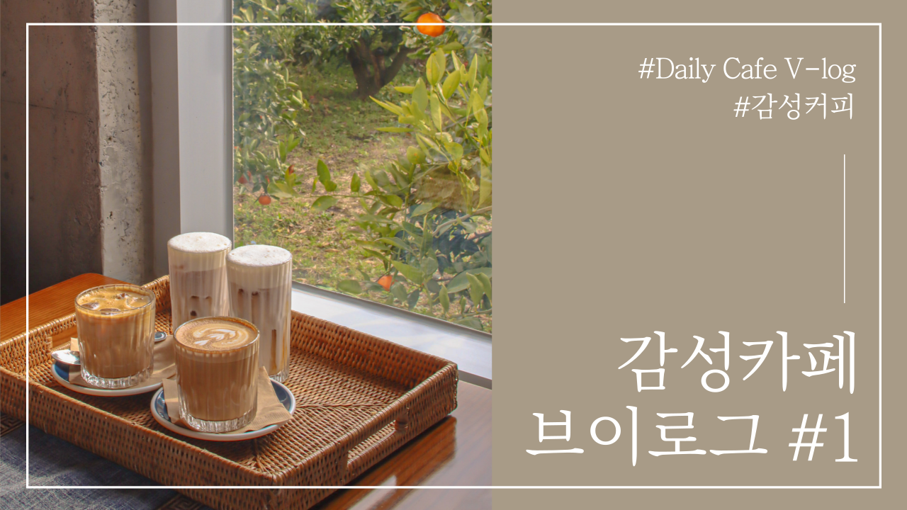

Youtube
#JeJu
#Travel
#Drive
[Game] GTA5 흔한 버그(자동차 버그)
1M views 1 month ago
1K
0
Share
Save
Report
나와라마
1M subscribers
subscribe
Up next
[라마 News] 서울, 경기권 폭우 호우주의보 발효
나와라마
82K views
[Vlog] 국내 여행 브이로그(Let it be a journey)
나와라마
82K views

[Vlog] 감성카페 브이로그 #1(#Daily Cafe V-log#감성커피)
나와라마
82K views
 [Vlog] 국내 여행 브이로그(Let it be a journey) 나와라마 82K views
[Vlog] 국내 여행 브이로그(Let it be a journey) 나와라마 82K views